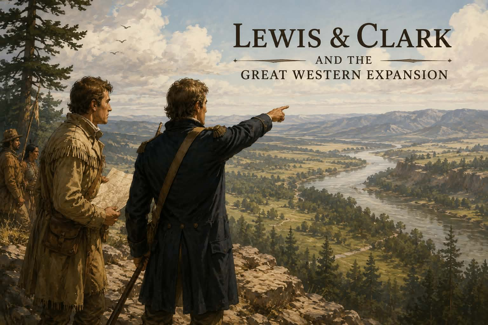

History · Grade 8 · Worksheet
Read the history, then answer in your own words. Answer key on the last page.

In 1803 the United States bought a piece of land so large it doubled the size of the country. It was called the Louisiana Purchase. The strange part is that almost nobody in the government knew what was in it. There were no reliable maps, rivers nobody had measured, and mountains nobody had crossed. President Thomas Jefferson wanted to know what he had just bought.
He chose Meriwether Lewis to lead an expedition west, and Lewis chose his friend William Clark to share command. Their group of soldiers and boatmen became known as the Corps of Discovery. They left St. Louis in May of 1804 and pushed up the Missouri River, rowing and sometimes dragging the boats against the current for months. Jefferson gave them real work along the way: map the rivers, record the plants and animals, and make peaceful contact with the American Indian nations whose land they were crossing.
They were not travelling through empty country. Dozens of nations already lived there and had for generations. In the winter of 1804 the Corps built Fort Mandan in what is now North Dakota, and there they met a Shoshone woman named Sacagawea, who joined them as an interpreter. She travelled the rest of the way carrying her newborn son. When the Corps reached the Rocky Mountains they badly needed horses, and the Shoshone band they found was led by Sacagawea's own brother. They got their horses.
Jefferson had hoped for a Northwest Passage, a simple water route running clear across the continent. There was no such thing. Instead the Corps crossed the Bitterroot Range hungry and freezing in September of 1805, came down to rivers that finally ran west, and reached the Pacific Ocean that November. They returned home in September of 1806 after two years and four months, having lost only one man. Most of the country had assumed they were all dead.
What they found ended one dream and began another. There was no easy water route to the Pacific, so that hope was gone for good. But the maps were real, and settlers followed them west for the rest of the century. For the nations already living on that land, those same maps marked the beginning of enormous loss. Both of those things are true about the same expedition.
“A man’s heart deviseth his way: but the LORD directeth his steps.”
Proverbs 16:9
Jefferson planned the expedition around a Northwest Passage — a water route straight to the Pacific. The Corps walked and climbed for two years and proved it had never existed. They found something real instead, and it was not the thing they set out for. Careful planning still runs into a world it did not design.
Before you answer. Four of these five are hiding in the reading. Find the sentence that answers each one and write its question number in the margin beside it, then answer from the sentence you found. Question 2 is a vocabulary word, so check the word list instead.
Vocabulary. expedition A long organised journey made for a purpose, such as exploring. corps An organised group of people working together, often military. interpreter Someone who translates between people who speak different languages. upstream Against the current, towards where a river begins. Northwest Passage A hoped-for water route running across North America to the Pacific, which did not exist. purchase Something bought.
Five Questions. Accept answers in the student's own words that carry the sense below. The place each answer comes from is noted, so you can check it was found rather than guessed.